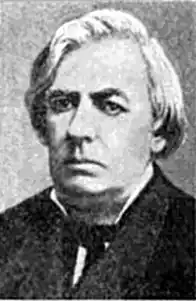

Яків Іванович Щоголів (5 листопада 1824, Охтирка — 27 травня (8 червня) 1898) — український поет, представник українського романтизму.
Народився 5 листопада 1824 року в Охтирці, Харківська губернія. Походив із давнього дворянського роду. Навчався в Охтирській повітовій школі, закінчивХарківський університет (1848) і працював у різних установах канцеляристом. Друкуватися почав з 1840 року в "Литературной газете", "Отечественных записках", альманасі "Молодик". Далі поетична творчість Щоголева тривала зі значними перервами. У 1883 році вийшла збірка поезій "Ворскло", у 1898 — "Слобожанщина". Головним джерелом творчого натхнення автора була поезія Тараса Шевченка і фольклор ("Неволя", "Могила" та ін.).
Яків Щоголів, якого звуть "спізненим романтиком", оспівував у поезіях давні часи, давній побут, красу природи (зокрема тієї, якої не торкалася людська рука). У віршах Щоголів часто тужить за своїми дитячими літами, які щасливо провів під оком дбайливої, ніжної матері. Краса рідних краєвидів — недалекий степ, водяні млини, пасіки, ріка Ворскла — все це чаром поезії овівало ніжну душу хлопчини й відбилося згодом у його поетичних творах. Іван Петрович та Олександра Петрівна, батьки поета, як і більшість охтирців, жили тихим узвичаєним життям із дотриманням релігійних і народних звичаїв. Дід був священиком. Родина жила у скромних достатках. Батько мав власний дерев’яний будиночок і десять десятин землі, був дрібним урядовцем, але по службі просунувся невисоко. У 1832—1835 роках Яків учився у трикласному повітовому училищі в рідному місті, потім вступив до Першої харківської гімназії. Саме там він захопився художньою літературою, читав твори В. Скотта, М. Гоголя. Уже під час гімназійного навчання у Харкові він помістив в альманаху "Молодик" (1843—1844) свої перші вірші. Але суворий відгук російського критика Віссаріона Бєлінського став причиною того, що Щоголів спалив свої ще не друковані твори й замовк на тривалий час. Під час університетських студій Яків Щоголів зблизився із професорами Метлинським, Срезневським й Костомаровим, які мали великий вплив на його світогляд. Під впливом Метлинського, що розбудив у нього тугу за минулим України, поет почав знову писати. Ці нові поезії з’явилися в Кулішевій "Хаті" (1860). Після закінчення університету Яків Щоголів вступив на державну службу в канцелярії губернатора, але згодом залишив її і проживав у тісному родинному колі, далеко від світового гомону. Багато уваги приділяв сім’ї, дбав про виховання дітей, які тонко розуміли поезію, заохочували батька до творчості. У 1883 році він видав збірку поезій "Ворскла"; а 1898 року, у день його похорону, вийшла збірка "Слобожанщина". Поезія Щоголева багата різноманітними мотивами. Є в нього багато віршів, у яких поет опирається на народні вірування у відьом, вовкулаків, лоскотарочку, у квіт папороті ("Климентові млини", "На полюванні", "Ніч під Івана Купала", "Рибалки", "Вовкулака", "Лоскотарочка"). Вони стилізовані на взірець народних пісень. У деяких творах ("Ткач", "Кравець", "Мірошник") Щоголів оспівував ремісницький побут та ремісницьку працю. У житті Яків Іванович зазнав чимало горя. Він поховав дочку і сина, на старості років сам багато хворів. Останні роки життя провів у Харкові. Щоголів був одним з представників Харківської школи романтиків, і велика кількість його поезій присвячена романтичному зображенню історичного минулого України, насамперед Запорізької Січі йкозаччини ("Січа", "В степу", "Запорозький марш", "Орел", "Орлячий сон" тощо), образам запорожців. Козакофільська романтика Щоголева перейнята песимістичною тугою за минулим, за зниклою "останньою Січчю". Низка поезій присвячена образам української природи ("Травень", "Осінь", "Степ", "Після бурі" тощо). Окремі вірші Щоголева позначені соціальними мотивами ("Струни", "Завірюха", "Пожежа", "Маруся", "Бурлаки" та ін.). Багато віршів поета покладено на музику, і вони увійшли в пісенний народний репертуар ("Пряха", "Черевички", "Зимовий вечір"). Посмертні видання творів Щоголева: "Твори. Повний збірник" (X. 1919), "Поезії" (К. 1926), "Твори", І — II (1930), "Поезії" (К. 1958), "Твори" (К. 1961).